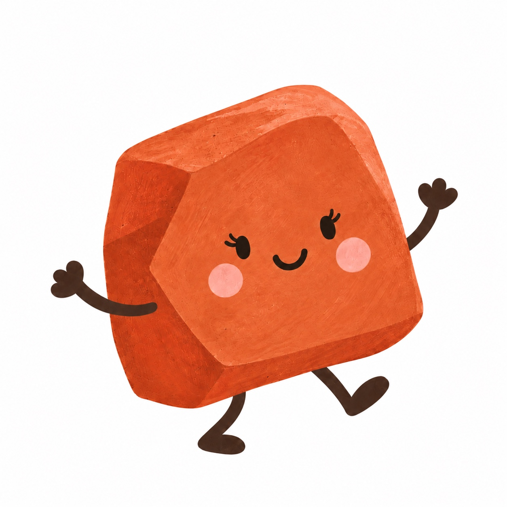
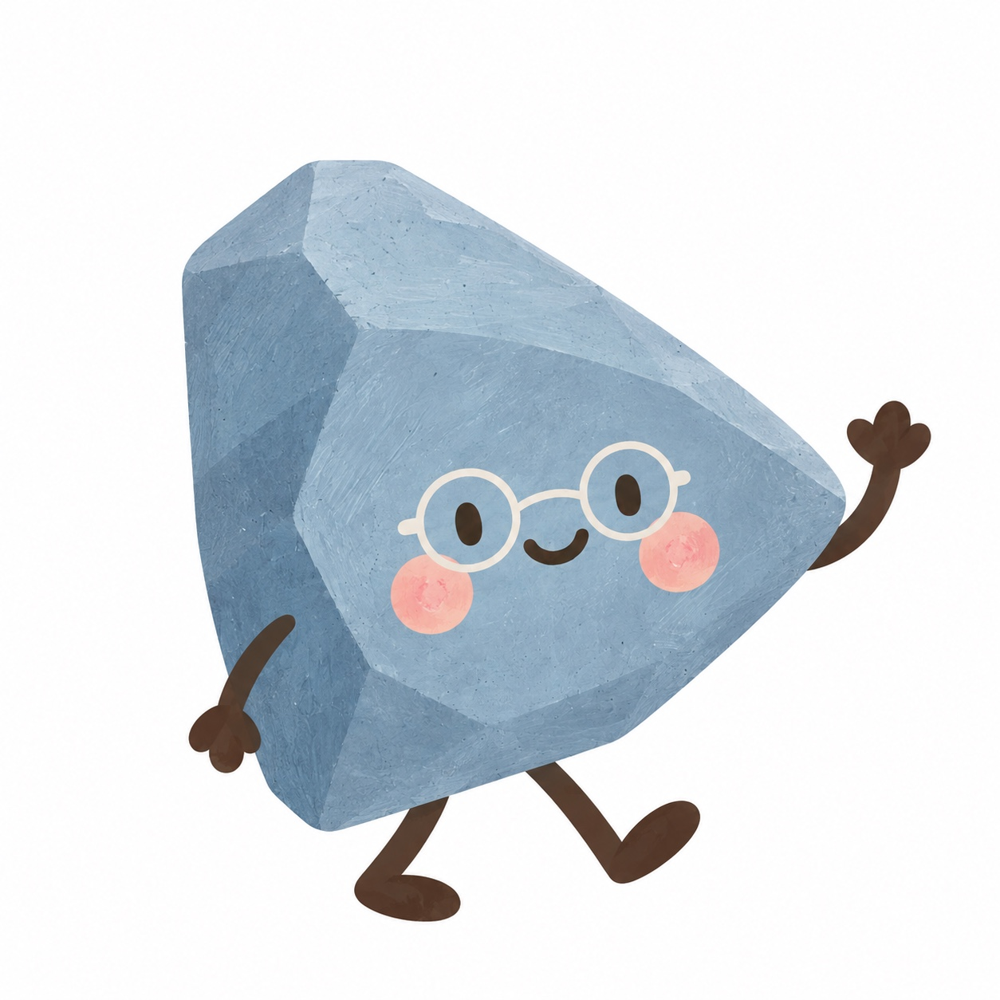
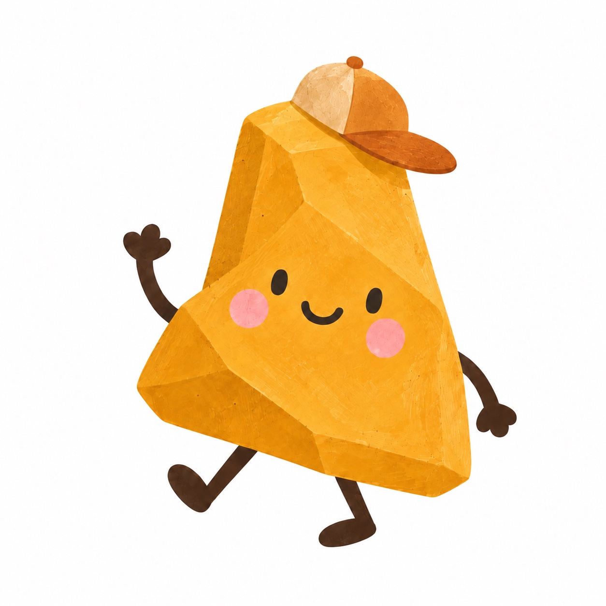
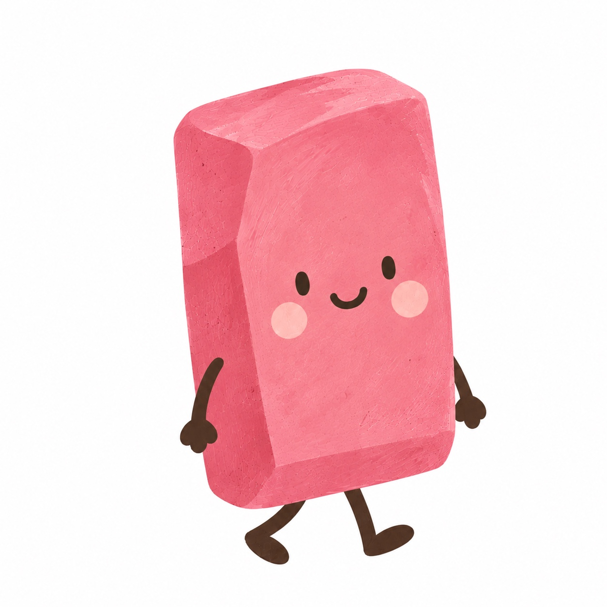
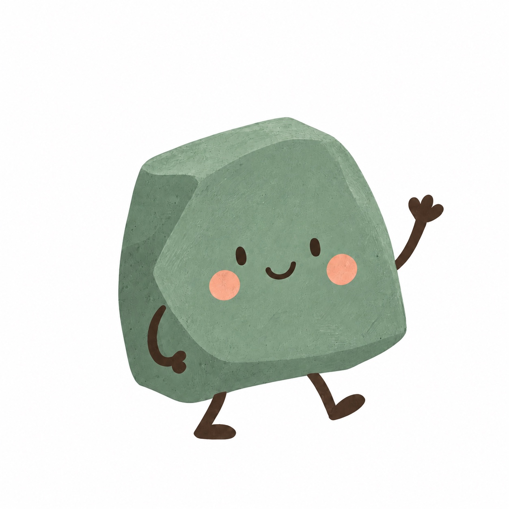

Connection

Meet Mabel
We believe meaningful communication begins with connection. We create warm, welcoming spaces where children feel safe, seen, understood and included.
About Cornerstone Kids
Every child deserves to be understood, celebrated and supported in their own unique way.
At Cornerstone Kids Speech Therapy, we believe connection, communication and confidence are cornerstones of a child’s development. We take the time to truly get to know each child and family, looking beyond challenges to understand their strengths, interests, personality and individual way of communicating.
Our approach is neurodiversity-affirming, respectful and collaborative. We create a warm, supportive space where children can be themselves, build confidence and develop communication skills that are meaningful to everyday life.
Development is about more than achieving milestones. It is about laying strong foundations for connection, confidence, curiosity and participation. Through genuine connection, clinical expertise and individualised care, we work alongside families to support meaningful progress beyond the therapy session.
What guides us
At Cornerstone Kids Speech Therapy, our values are brought to life by our five Cornerstones. Each represents something we believe is essential to supporting children and their communication journeys. Together, they remind us that every child deserves to feel understood, celebrated and empowered.
Connection

We believe meaningful communication begins with connection. We create warm, welcoming spaces where children feel safe, seen, understood and included.
Communication

Every child has something to say. We recognise and celebrate all forms of communication, knowing every way of expressing ourselves deserves to be heard.
Curiosity

We embrace children’s natural curiosity, following their interests and creating opportunities for exploration, discovery and meaningful learning.
Individuality

Every child is wonderfully unique. We celebrate different strengths, perspectives and ways of communicating, learning and experiencing the world.
Empowerment

We support children to build confidence, make choices and communicate in ways that feel right for them, encouraging independence and self-expression.
Our commitment to families
Every child is at the centre of what we do. We tailor our approach to their strengths, interests, needs and goals, ensuring therapy is meaningful and respectful of who they are.
We are committed to thoughtful, ethical and evidence-based care. We value honesty, professional integrity and high-quality services families can trust.
We partner with families, educators and other professionals to support communication and participation across everyday environments.
Meet Melissa
Melissa is an experienced Speech Pathologist and Hanen Certified Clinician who is passionate about supporting children to develop communication skills while feeling confident, understood and empowered to be themselves. With experience across a range of settings and diverse communication needs, she brings a flexible and individualised approach to her work.
Melissa takes a neurodiversity-affirming approach, recognising and valuing each child’s strengths, interests and unique way of communicating. She works closely with children and their families to create therapy that is meaningful, playful and engaging.
Melissa holds a Master of Speech Pathology from La Trobe University and is a Certified Practising Member of Speech Pathology Australia.